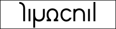
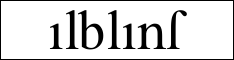
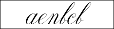
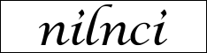
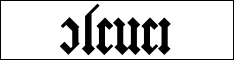
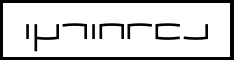

|
Arna
Arna Type is the new official type of the Lunar alphabet. You can use it freely.
Nias created some fonts and you can download them from this page and use them freely.
Basics
There are 5 basic fonts. cf. fledilans
Kardinal

Kardinal (cosmos): The most basic font.
Readability: Good
Intended purpose: It can tell how you should write the Lunar alphabet properly.
Alblant

Alblant (cluster amaryllis): The most basic serif font.
Readability: Good
Intended purpose: For body texts.
Fenlil

Fenlil (fragrant olive): The most basic manuscript font.
Readability: Bad
Intended purpose: For decoration, foreign languages, manuscript and so on.
Nalnia

Nalnia (Lavender): The most basic script font.
Readability: Middle
Intended purpose: For Lutia and so on.
Olivia

Olivia (rose): The most basic blackletter font.
Readability: Bad
Intended purpose: For historical stateliness and so on.
Derivative Fonts
Lantia
Lantia: Kardinal with serif.
Readability: Good
Intended purpose: For everything.
Inje
Inje: Like the crescent moon.
Readability: Good
Intended purpose: For women and children.
Defans

Defans: Like a square.
Readability: Middle
Intended purpose: It gives us mechanical atmosphere.
Fialis
Defans: It's sharp.
Readability: Middle
Intended purpose: For logo and so on.
|